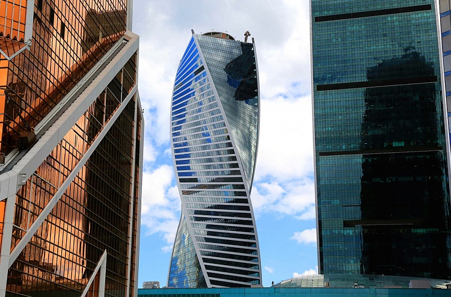

Башня Эволюция
Спираль жизни — уникальный небоскреб в форме молекулы ДНК

Характеристики
- Высота:255 м
- Годы строительства:2011-2015
- Девелопер:«Снегири»
- Застройщик:ООО «Сити-Палас»
- Общая площадь:153 891 м²
- Скорость лифтов:7 м/с
- Количество этажей:53
- Количество машино-мест:1 292
- Инфраструктура:21 000 м²
- Офисные помещения:64 000 м²
- Участок:2, 3
Спираль ДНК в архитектуре
Спиралеобразная форма башни «Эволюция» напоминает молекулу ДНК: две белоснежные ленты противоположных фасадов плавно закручиваются и объединяются в обнаженной металлической конструкции над кровлей. Визуально башня словно «поворачивается» вокруг своей оси на 156 градусов (каждый из 52-х ее уровней — на 3 градуса относительно нижележащего).
Завершающая композицию «Корона башни» увенчана двумя асимметричными «арками» пролетом 41 метр, визуально объединяющими единой белоснежной «лентой» два противоположных фасада в подобии математического символа бесконечности.
🔮 Уникальная технология остекления
Уникальный фасад Башни из холодногнутого остекления подчеркивает легкость и динамику струящейся наперекор силам гравитации формы. Двояковыпуклая кривизна фасада башни обеспечивается при помощи абсолютно плоских стеклопакетов из отражающего стекла технологией их «холодного» гнутья. При сборке модульной панели стеклопакет укладывается в проем рамы, находящейся в горизонтальном положении, и под собственным весом деформируется, принимая форму рамы без какого-либо термического воздействия.
Максимальная деформация одного угла стеклопакета из плоскости — не более 50 мм. В конечном итоге фасад выглядит как единая оболочка из стекла, выгнутого по спирали.
✨ Оптическая иллюзия
Непрерывная лента гнутого остекления с постоянным наклоном в углах башни (примерно 14 градусов к вертикали) реализует удивительную оптическую иллюзию, отражая окружающие панорамы Москвы перевернутыми под углом 90 градусов к горизонту, то есть вертикально, что также беспрецедентно для мировой архитектуры.
Как добраться
📍 Адрес: Пресненская набережная, 2, Москва
🚇 Метро: Выставочная, Международная, Деловой центр